Vorwort
Sie sehen vom 13. Mai bis zum 24. Juni 2026 in der Mediathek in Eltville am Rhein eine Werkschau des Dokumentarfotografen Florian Bachmeier. Dieser digitale Führer soll Sie beim Gang durch die Ausstellung begleiten. Sie sehen Bilder von 1996 bis 2025 aus Afghanistan, Bangladesch, Mauretanien, Rumänien, Sambia, Spanien, der Ukraine, Venezuela und entlang der Fluchtrouten in Europa.
Die 63 Bilder zeigen, wie "Leben an den Rändern" aussieht, wie Profitgier, Klimawandel und Krieg die Lebensgrundlagen von Menschen zerstören. Sie erzählen aber auch, wie Menschen trotz dieser widrigen Umstände ein würdiges Leben gestalten und solidarisch handeln.
Internationale Anerkennung fand diese künstlerische und politische Haltung, als World Press Photo im Frühjahr 2025 Florian Bachmeier den Preis für das beste Einzelfoto in der Kategorie Europa verlieh. Das Bild zeigt die sechsjährige Anhelina in Borschtschiwka nahe der Front in der Ukraine. Die Jury von World Press Photo war beeindruckt davon, "wie es dem Fotografen gelang, ein solch stilles Bild aufzunehmen, das gleichwohl den Betrachter veranlasst, innezuhalten und einen Aspekt des russischen Kriegs gegen die Ukraine zu bedenken, der ansonsten nicht ausreichend berücksichtigt wird."
Florian Bachmeier sagt über seine Bilder:
"Ich möchte Geschichten erzählen, die oft übersehen werden. Die Aufmerksamkeit der Betrachtenden möchte ich auf jene Menschen richten, die unter Ungerechtigkeit, Krieg und Umweltzerstörung leiden. Ihnen gilt mein Respekt, denn trotz widriger Umstände führen sie ein Leben in Würde und oft auch in Solidarität. Ich würde mir wünschen, dass das Publikum beim Betrachten meiner Fotografien Empathie für diese Menschen entwickelt und vielleicht auch ein gewisses Verantwortungsgefühl."
Das Publikum erkennt beim Gang durch die Ausstellung fünf thematische Linien in den Geschichten von Afghanistan bis Venezuela: Gemeinschaft, Unterwegssein, Leben mit der Natur, Leben im Krieg, Religion.
Florian Bachmeiers Fotografien wurden in vielen Zeitungen und Zeitschriften veröffentlicht, aber auch in Museen ausgestellt und vielfach ausgezeichnet. Er ist ein Grenzgänger zwischen Journalismus und Kunst. "Mich fasziniert", so Kuratorin Mechtild Manus, "wie Florian Bachmeier als Reporter die harte Wirklichkeit in Ländern von Afghanistan bis Venezuela abbildet und gleichzeitig als Künstler mit Licht und Schatten, Nähe und Tiefe seinen Fotografien eine herbe Schönheit verleiht."
Fotografie hat Florian Bachmeier (*1974, Tegernsee) in Pamplona (Spanien) studiert, danach Neue und Neueste Geschichte in München. Er ist Mitglied beim "n-ost Network for Border Crossing Journalism".
Die Ausstellung wird in Zusammenarbeit mit der Philipp-Kraft-Stiftung gezeigt. Sie wird unterstützt von Saal Digital und Farben Griesbeck.
Alle Bilder können Sie käuflich erwerben. An der Ausleihe liegt eine Preisliste. Bei Interesse wenden Sie sich bitte an die Kuratorin Mechtild Manus: 0151-28818033, manus_schliersee@posteo.de.
Mehr Informationen:
www.florianbachmeier.com
Afghanistan 2016
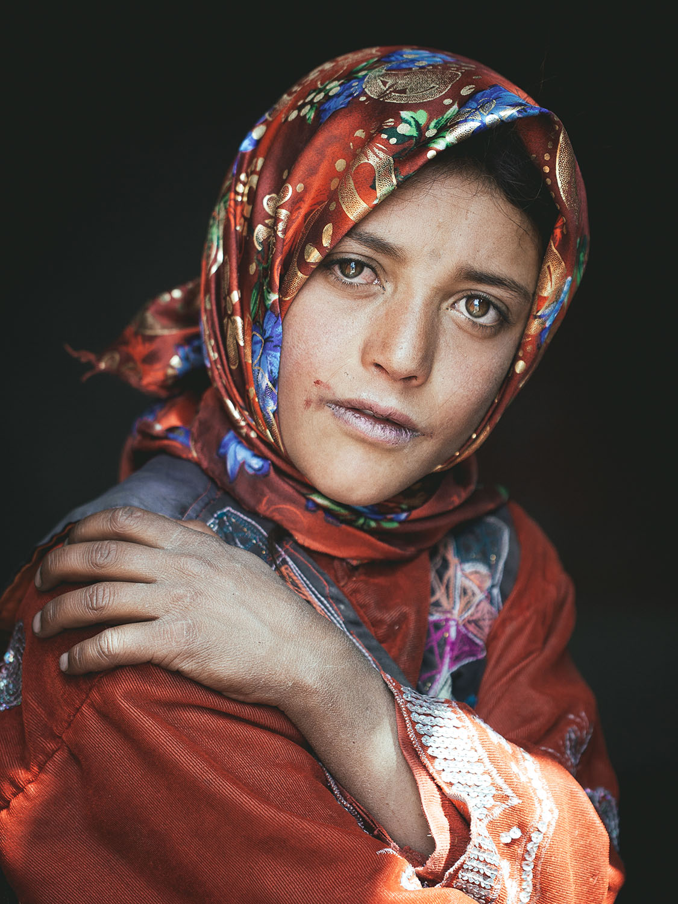
2: Malala, Sarhad-e-Broghil, Afghanistan, 2016
In die nordöstlichste Ecke von Afghanistan reiste Florian Bachmeier 2016 im Auftrag des Magazins Terra Mater. Im Dorf Sarhad-e-Broghil sah er die 18-jährige Malala vom Volk der Wakhi, die sich am Fenster lehnend von der bäuerlichen Arbeit ausruhte. Ruhig und selbstbewusst schaut Malala den Fotografen an. Ihr schmales Gesicht steht im Kontrast zu ihren kräftigen Händen. Das Sonnenlicht fällt auf den bestickten Saum ihres Gewands. Was ist wohl aus ihr geworden?
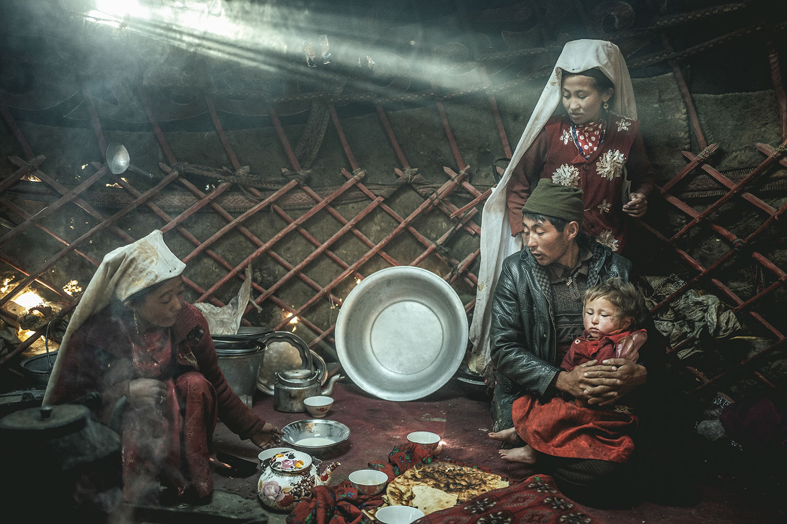
3: Ohne Titel, Sarhad-e-Broghil, Afghanistan, 2016
Im Wakhan-Korridor von Afghanistan leben sesshafte Wahki, die auf Terrassen im Tal Ackerbau betreiben und nomadisierende Kirgisen mit Sommerweiden im Pamirgebirge. Hier sieht man eine kirgisische Nomadenfamilie in ihrer Jurte bei der Morgenmahlzeit. Die Nomadenfamilien werden in ihrer Bewegungsfreiheit von politischen Grenzen eingeschränkt, die sich auf den imperialistischen Wettlauf zwischen dem Britischen Empire und dem Russischen Zarenreich zurückführen lassen. Heute begrenzen Tadschikistan, Pakistan und China die afghanische Bergregion.
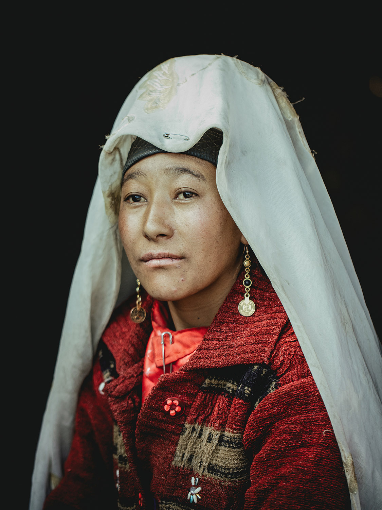
4: Hadidja, Sarhad-e-Broghil, Afghanistan, 2016
Hadidja in ihrer kirgisischen Tracht, die sich von Malalas Kleidung deutlich unterscheidet. Wakhi und Kirgisen bewohnen gemeinsam den Wakhan-Korridor.
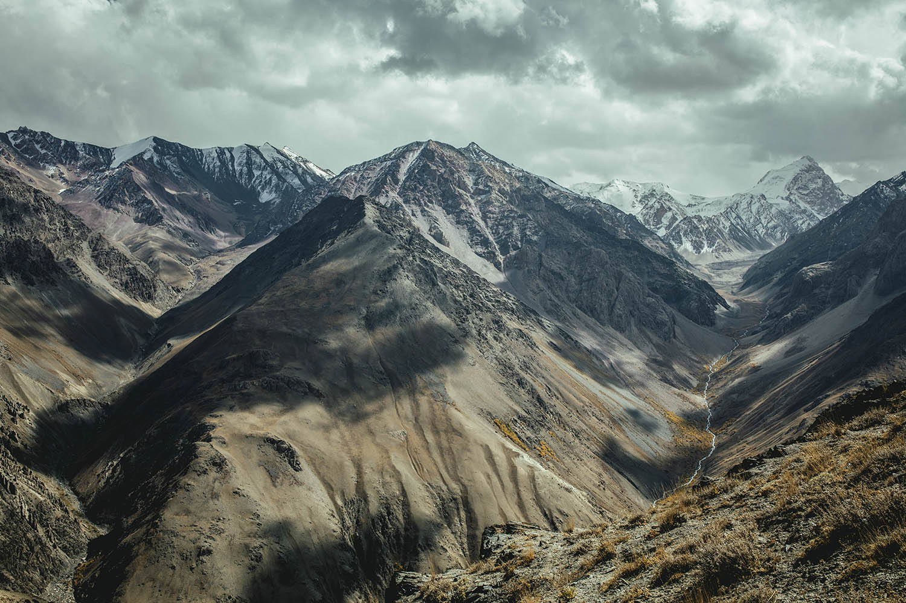
5: Broghil-Pass, Sarhad-e-Broghil, Afghanistan, 2016
Über diesen Saumweg ziehen die Nomadinnen und Nomaden im Sommer mit ihren Tieren zu den Weideplätzen. In seinem Gedicht „Lebenslauf“ lobte der Dichter Friedrich Hölderlin im Jahr 1800 des Menschen „Freiheit, aufzubrechen, wohin er will.“ Allerdings wird diese Freiheit den meisten Menschen auf dieser Erde nur sehr eingeschränkt zugestanden. Menschen in Afghanistan etwa dürfen nur in 28 Länder ohne Visum reisen. Kein einziges europäisches Land zählt dazu. Von den 8,2 Milliarden Menschen weltweit genießen die Deutschen dagegen die viertgrößte Bewegungsfreiheit: In 185 Länder dürfen sie problemlos einreisen.
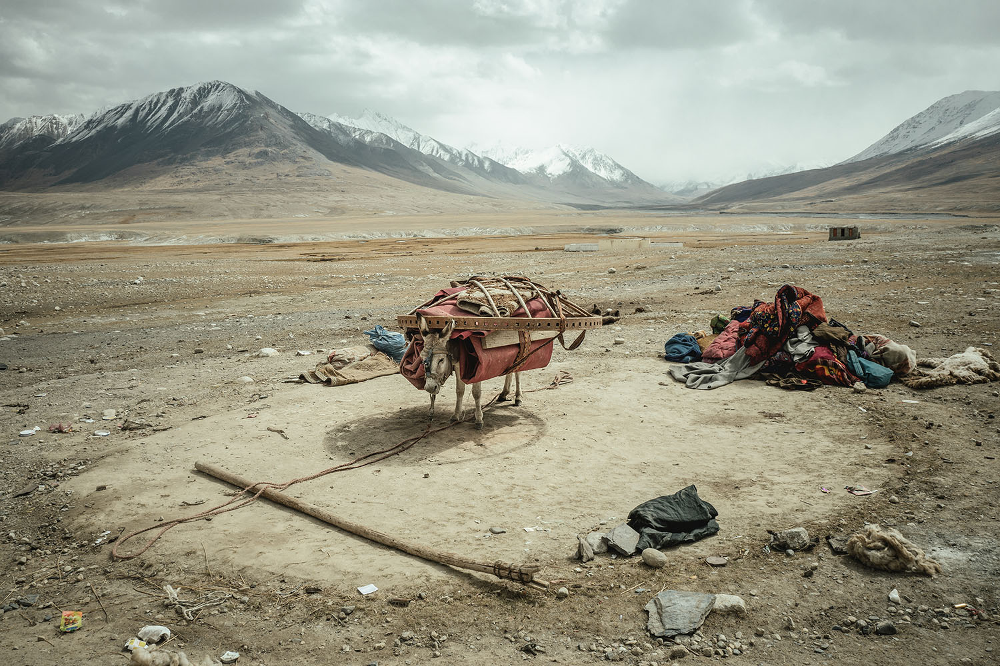
6: Weiterziehen, Sarhad-e-Broghil, Afghanistan, 2016
Die kirgisische Familie hat die Jurte abgebaut. In Kürze verlädt sie ihren Hausstand auf die Maultiere, um zu einem neuen Weideplatz aufzubrechen. Mancher bricht auch ins Ungewisse auf in Richtung Europa.
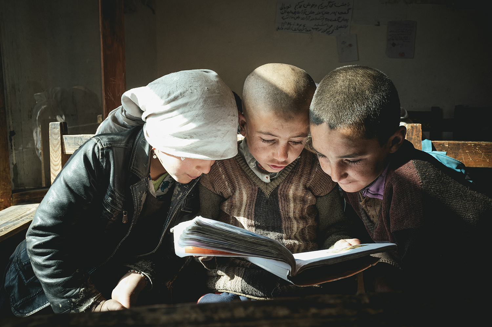
7: Dorfschule, Potokh, Afghanistan, 2016
Im Unterschied zu den nomadischen Familien, die nur den Winter im Dorf verbringen, leben die sesshaften Familien ganzjährig in ihren Lehmhäusern. Die Schule war 2016 noch gleichermaßen für Mädchen und Jungen offen. Nach dem Abzug der NATO-Truppen 2021 haben die Taliban wieder die Herrschaft über Afghanistan errungen. Entwicklungsnetzwerke, wie etwa das Aga Khan Development Network, mussten ihre Tätigkeit einschränken. Wie ist die Situation wohl heute in der Schule von Potokh? Gibt es diese Schule überhaupt noch?
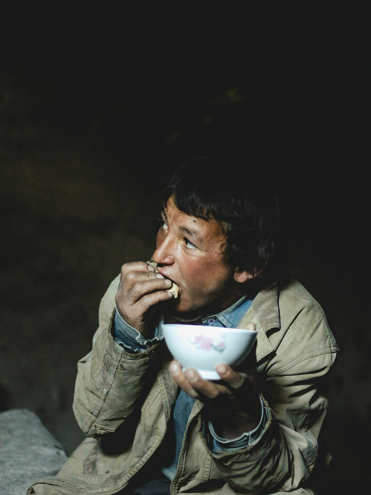
8: Ohne Titel, Khas Dej, Afghanistan, 2016
Dieser Schäfer in Khas Dej stärkt sich, wie jeden Morgen, mit salzigem Milchtee und trockenem Fladenbrot, bevor er mit den Tieren loszieht.
Ukraine 2014–2024
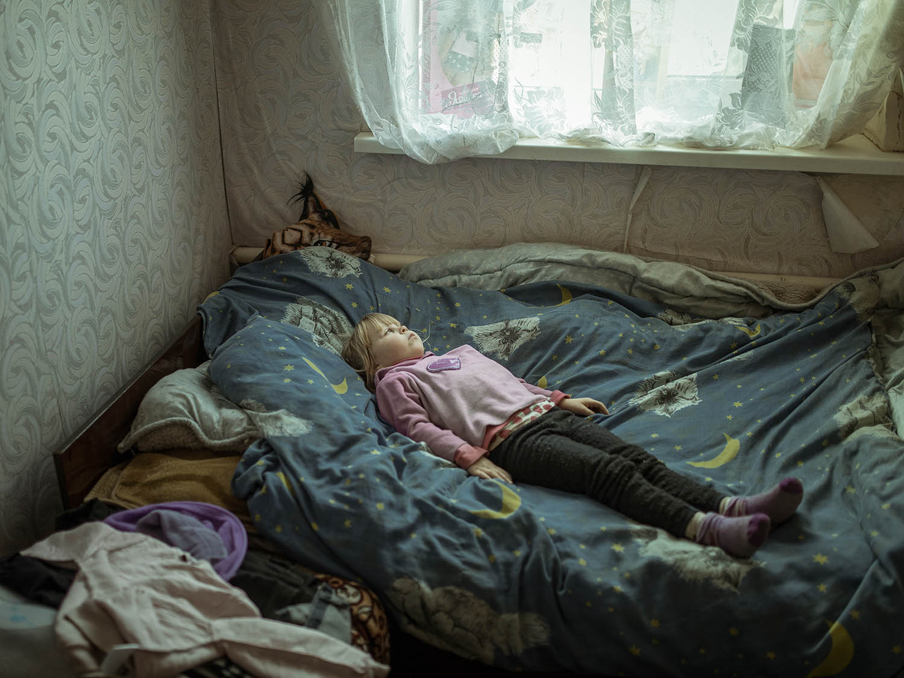
9: Anhelina, Borschtschiwka, Ukraine, 2024
Seit 2012 reist Florian Bachmeier jedes Jahr mehrmals in die Ukraine, im März 2026 etwa in das Gebiet von Charkiw. Er dokumentierte 2014 die Annexion der Krim, die Auswirkungen der Kämpfe im Donbass auf die Zivilbevölkerung und seit dem 24. Februar 2022 die Vollinvasion der Ukraine durch Russland.
Die folgenden Bilder zeigen das Leben an der Front, wo viele Dörfer nahezu verlassen sind. Die wenigen Menschen, die geblieben sind, haben oft keine andere Wahl. Alte und kranke Menschen können nicht fliehen, und diejenigen, die noch mobil sind, fürchten, ihre letzten Habseligkeiten zu verlieren, wenn sie gehen. Die Menschen leben in ständiger Lebensgefahr, in Angst vor Beschuss, vor Entführungen und Folterungen, doch der Verlust ihrer Heimat scheint für sie der größte Albtraum zu sein. Die tägliche Realität dieser Menschen ist geprägt von Angst und Unsicherheit, doch auch von einem erstaunlichen Mut und einer tiefen Verwurzelung in ihrer Heimat.
Die sechsjährige Anhelina lebt bei ihrer Großmutter in Borschtschiwka. Sie ist traumatisiert vom ständigen Beschuss, leidet unter Panikattacken. Dieses Foto erschien zuerst im Amnesty Magazin. 2025 gewann Florian Bachmeier einen World Press Photo Award damit. Es beeindruckte die Jury "wie es dem Fotografen gelang, ein solch stilles Bild aufzunehmen, das gleichwohl den Betrachter veranlasst, innezuhalten und einen Aspekt des russischen Kriegs gegen die Ukraine zu bedenken, der ansonsten nicht ausreichend berücksichtigt wird."
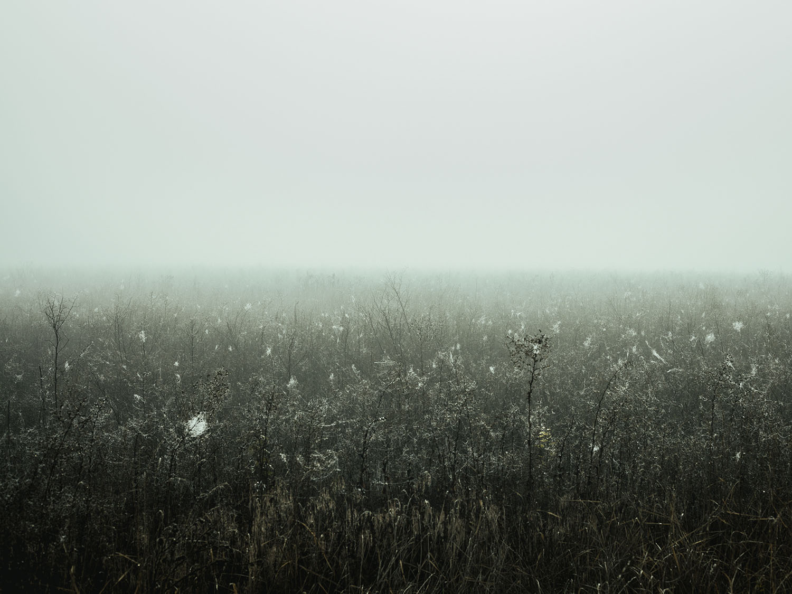
10: Vermintes Feld, Marinka, Ukraine, 2016
Im winterlichen Morgengrauen von Marinka liegt ein stiller Glanz über dem Minenfeld. Der Schnee dämpft den Krieg, verleiht der Landschaft einen trügerischen Schein von Schönheit. Doch unter der Oberfläche lauert der Tod. Eine verwundete Landschaft im Osten der Ukraine – vermint, verbrannt, entvölkert. Der Krieg schreibt sich in die Erde ein.
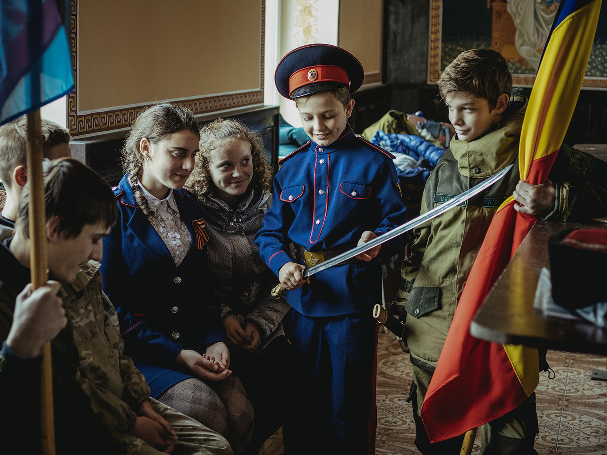
11: Kosaken und Kosakinnen, Torezk, Ukraine, 2016
Russland indoktriniert die Kinder in Russland und auch in den russisch kontrollierten Gebieten der Ukraine. Schon 2016 wurden diese Kinder im Donbass zum Kampf gegen die Ukraine erzogen und militärisch ausgebildet. Sie verstehen sich als Kosakinnen und Kosaken, haben einen Eid auf die russisch kontrollierte DNR (die international nicht anerkannte Donezker Volksrepublik) abgelegt. Was ist wohl heute – zehn Jahre nach dieser Aufnahme und vier Jahre nach der Vollinvasion der Ukraine – aus diesen Kindern geworden?
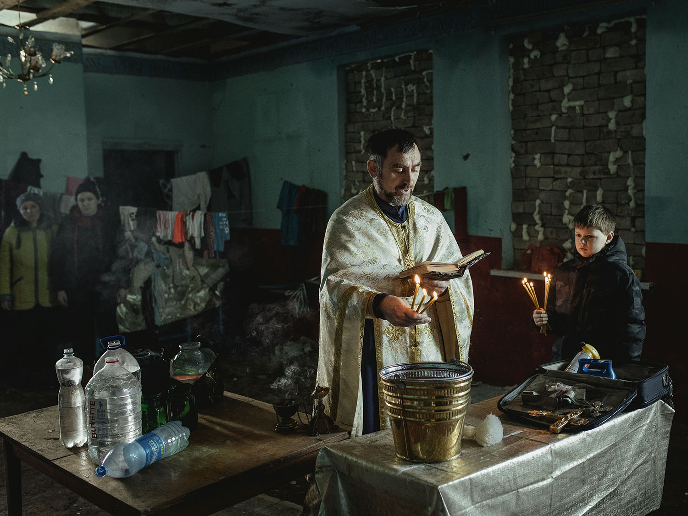
12: Epiphania I, Nowohryhoriwka, Ukraine, 2023
Trotz des Krieges halten die Menschen an ihren religiösen Ritualen fest. Vielleicht geben diese Traditionen ihnen Halt, wenn alles um sie herum zusammenbricht? Die Wasserweihe an Epiphania (dem westlichen Dreikönigsfest) ist eine solche Tradition. Sie beschließt die orthodoxe Weihnachtszeit.
Im Mai 2022 war die Bevölkerung des Dorfes Nowohryhoriwka beim Herannahen der russischen Armee evakuiert worden. Das Dorf wurde bei den Kämpfen völlig zerstört. Neun Monate später, nach der Rückeroberung durch die Ukraine, sind einige Menschen zurückgekehrt, um ihre Häuser wieder bewohnbar zu machen. Die Gläubigen versammeln sich in der zerstörten Kirche zum Gottesdienst mit Wasserweihe.
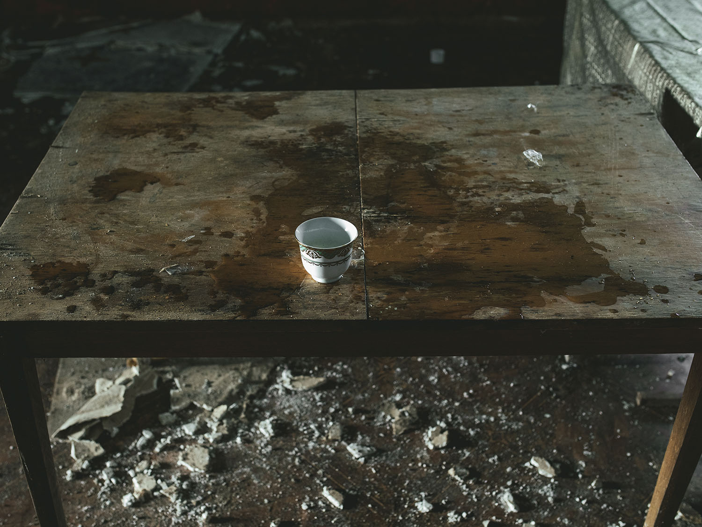
13: Epiphania II, Nowohryhoriwka, Ukraine, 2023
Aus dieser Tasse haben die Gläubigen das geweihte Wasser getrunken. Zwischen Schutt und verbranntem Holz markiert die Wasserweihe einen neuen Anfang. Das stille Glitzern des gesegneten Wassers ist ein leiser Versuch, Ordnung in die Verwüstung zu bringen.
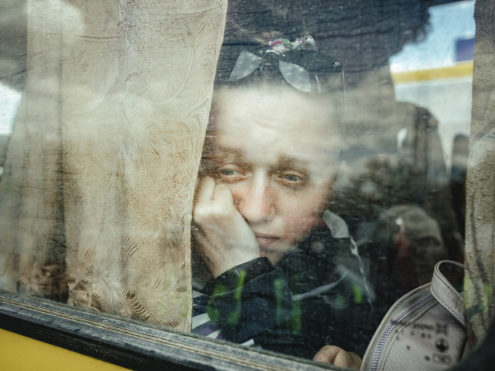
14: Ohne Titel, Saporischschja, Ukraine, 2022
Seit sieben Tagen ist diese junge Frau aus Cherson zusammen mit anderen in zwei Kleinbussen auf der Flucht. Sie waren zwischen die Fronten geraten. Die Russen ließen sie nicht auf ukrainisch kontrolliertes Gebiet. Sie inszenierten sogar eine Scheinhinrichtung, um die Menschen einzuschüchtern. Schließlich erlaubten sie die Überquerung der Front in das ukrainisch kontrollierte Gebiet bei Saporischschja. Dort auf dem Parkplatz eines Einkaufszentrums entstand das Foto. Es wurde 2022 von Pressefoto Bayern mit dem 1. Preis in der Kategorie Europa ausgezeichnet.
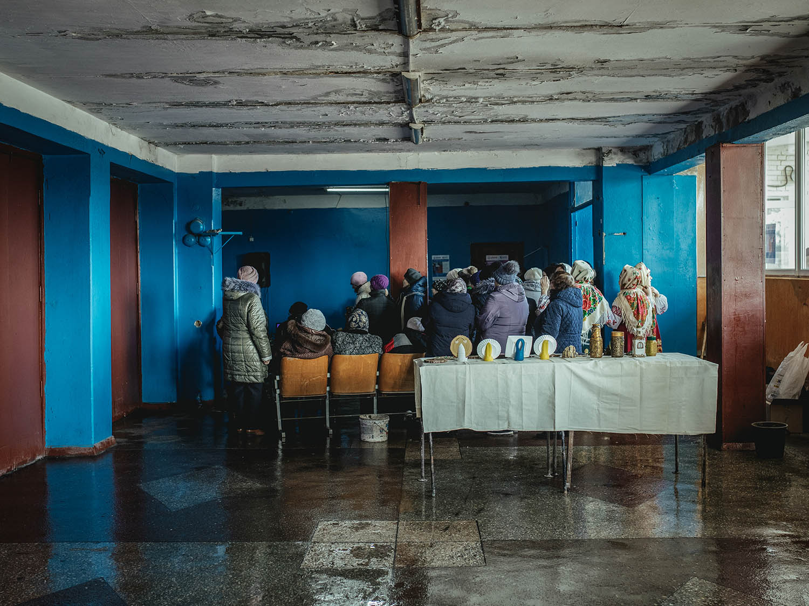
15: Internationaler Frauentag, Trjochisbenka, Ukraine, 2019
Zu den stärkenden Traditionen im Krieg gehört der Internationale Frauentag am 8. März. Im Dom Kultury (Kulturhaus) schauen sich die Frauen eine Folklore-Aufführung an. Später essen sie gemeinsam. Jede hat etwas mitgebracht.
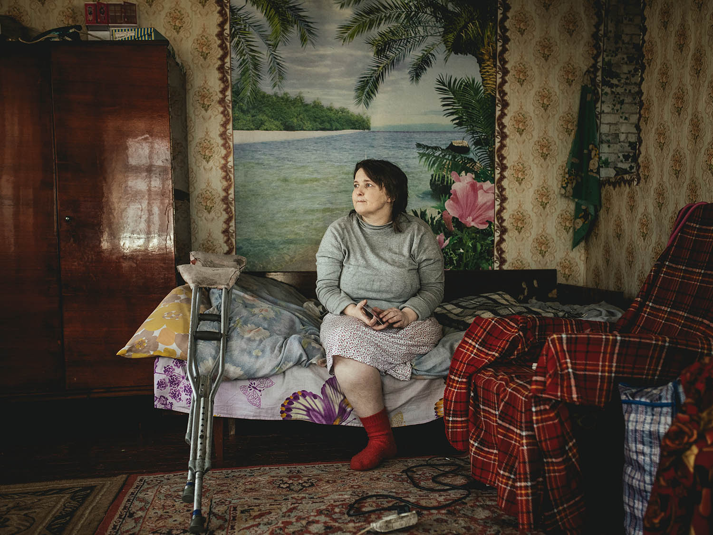
16: Tatjana, Trjochisbenka, Ukraine, 2019
Tatjana hat 2014 in Luhansk durch eine Granate eine Tochter und ein Bein verloren. Sie war mit einer ihrer drei Töchter auf dem Weg zur Krankenstation, als heftiger Beschuss einsetzte. Vom Tod ihrer Tochter erfuhr sie erst neun Tage nach dem Angriff im Krankenhaus.
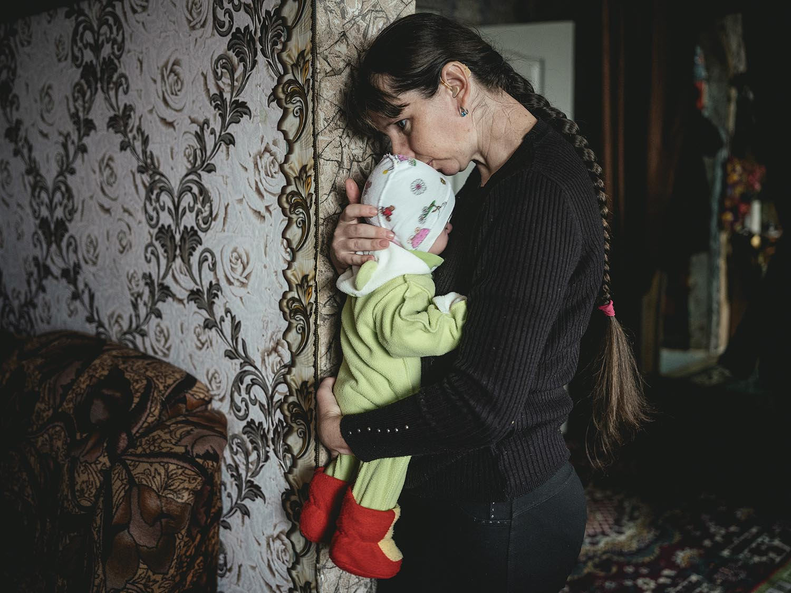
17: Tanya, Voloska Balakliia, Ukraine, 2024
Die gehörlose Tanya, 35, lebt mit ihrer Tochter Polja, 3 Monate, und einem weiteren Kind an der Front. Wegen der Kämpfe hatte Tanya ihr eigenes Haus verlassen. In einem nahegelegenen Dorf fand sie Zuflucht bei einer Bauernfamilie.
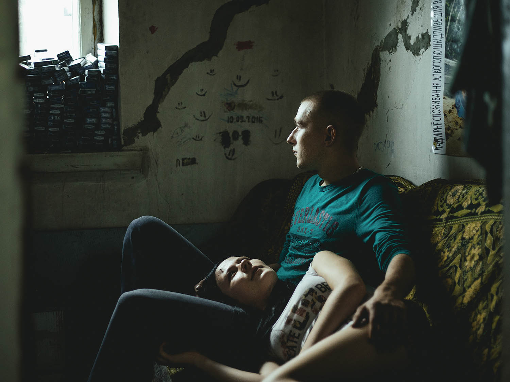
18: Sascha und Lisa, Marinka, Ukraine, 2016
Sascha (20) und Lisa (17) bleiben in ihrem teilweise zerstörten Haus an der Front im Donbass. Nach Beginn der Kämpfe 2014 ging Saschas Mutter weiterhin zur Arbeit im damals von Separatisten kontrollierten Gebiet. Nach wenigen Tagen wurde sie auf dem Weg von einer Granate zerfetzt. Sascha möchte sich keiner Seite anschließen und sein Haus nicht mehr verlassen, solange der Krieg andauert.
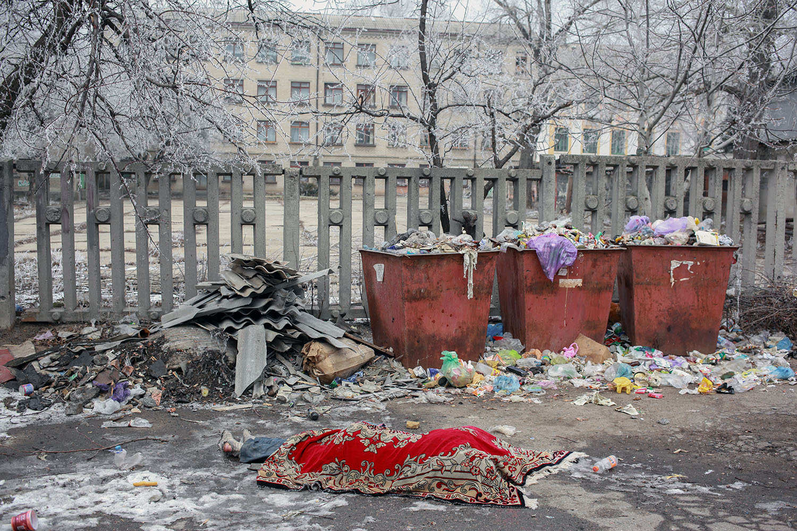
19: Ohne Titel, Myronivs'ki, Ukraine, 2015
An der Straße liegt der Leichnam eines unbekannten Jugendlichen, der von einer Granate getötet wurde. Jemand hat ihm seine noch brauchbaren Stiefel ausgezogen. Ein anderer hat ihn in mit einem Teppich zugedeckt.
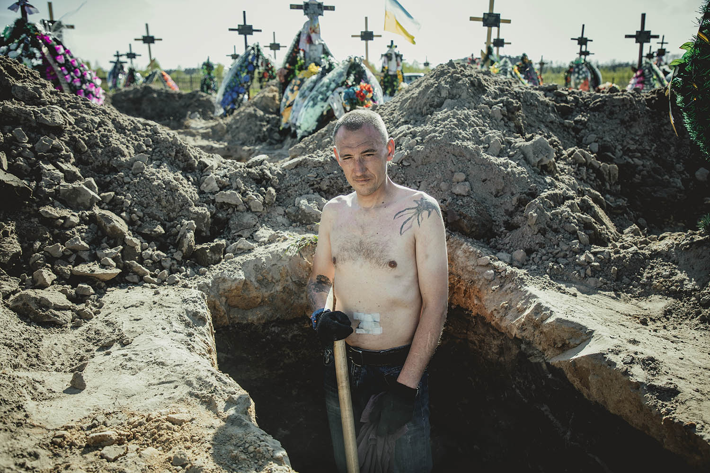
20: Pavel Latsyba, Butscha, Ukraine, 2022
Noch sind nicht alle Opfer des Massakers von Butscha begraben. Pavel Latsyba spricht von mindestens 600 Toten. Der verletzte Soldat hat gerade für einen gefallenen Kameraden ein Grab ausgehoben. Er selbst wurde angeschossen, als er Wasser holen ging. Die Kugel steckt noch in seiner Bauchdecke und kann in der gegenwärtigen Situation nicht entfernt werden.
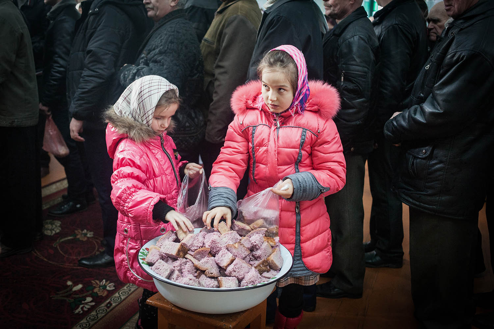
21: Epiphania III, Wylkowe, Ukraine, 2014
Im Südwesten grenzt die Ukraine an Rumänien und das Donau-Delta. Im Dorf Wylkowe wird Epiphania gefeiert. Zur Erinnerung an Jesu Taufe im Jordan werden Wasser und Brot geweiht. Die beiden Mädchen nehmen geweihtes Brot für die ganze Familie mit.
Nachdem die Donau auf 2800 Kilometern durch zehn Länder geflossen ist, mündet sie mit dem Donau-Delta an der Grenze von Ukraine und Rumänien, in einer einzigartigen und unzugänglichen Landschaft, in das Schwarze Meer. In dieser abgeschiedenen Welt der Holzboote, Schilfhütten und Fischerdörfer sind Glaube und Spiritualität ein wichtiger Anker im Alltag. Das Donaudelta ist eine Welt der Armut und der Rückständigkeit, aber auch eine magische Welt, unstet, nicht zu greifen oder zu begreifen.
Rumänien 2014–2025
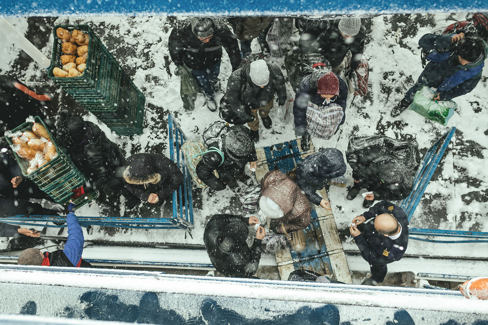
22: Fähre, Mila 23, Rumänien, 2017
Diese Fähre transportiert Personen, Tiere und Güter. Ohne Boot kann man sich im weit verzweigten Donau-Delta kaum fortbewegen. Das Boot ist die Brücke zur Welt. Im harten Winter wird die Fähre zur Lebensader zwischen den Dörfern des Deltas.
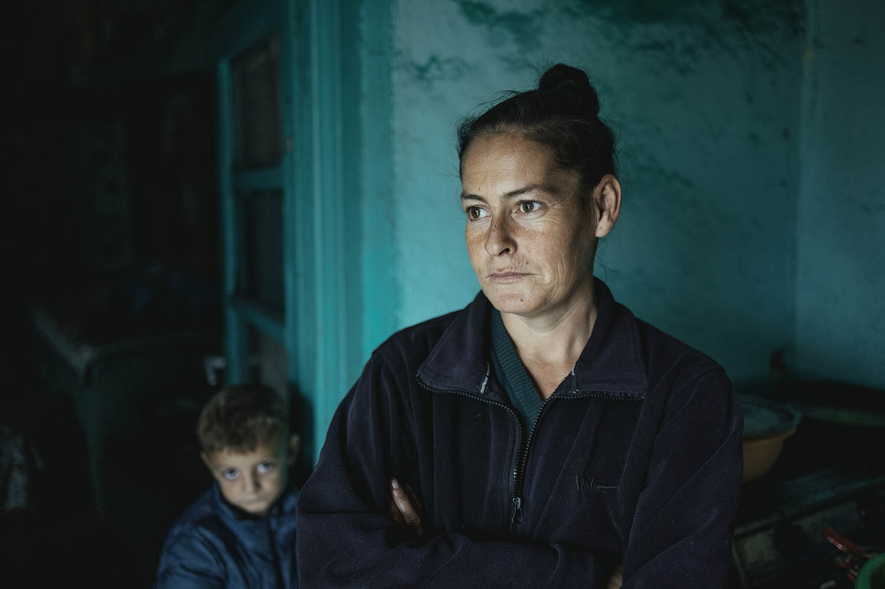
23: Ramona und MatiasDumitrache, Cilia Veche, Rumänien, 2025
Viele Menschen verlassen das Donau-Delta auf der Suche nach Arbeit. Kleine Kinder bleiben zurück bei den Großeltern, größere leben in Internaten, viele Frauen sind alleinerziehend wie Ramona Dumitrache.
Florian Bachmeier reist fast jedes Jahr in das Donau-Delta. Einige Familien und einzelne Menschen hat er über Jahre begleitet und immer wieder fotografiert. Für ihn ist das Donau-Delta ein ökologisch und gesellschaftlich gefährdeter Raum. Folgen des Klimawandels und gesellschaftliche Umbrüche treffen aufeinander. Wie in einem Brennglas kann man hier die drängenden globalen Probleme unserer Zeit erleben: Umweltzerstörung, Migration und soziale Ungleichheit.
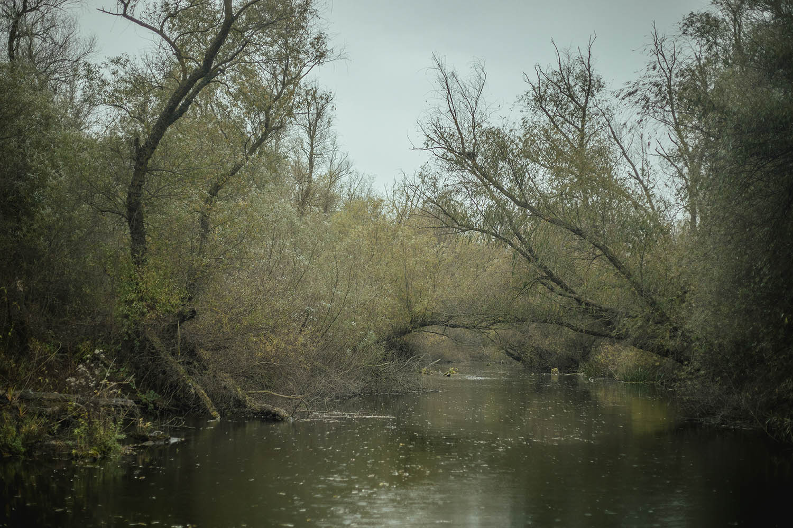
24: Canalul Sulimanca, Letea, Rumänien, 2025
Seit 1992 gilt der größere rumänische Teil und seit 1998 der kleinere ukrainische Teil des Donau-Deltas als UNESCO-Biosphärenreservat und als Weltnaturerbe. Das Donau-Delta ist elfmal so groß wie der Bodensee und das zweitgrößte Flussdelta in Europa. Die schwimmenden Inseln und die weltweit größte Schilffläche funktionieren wie ein Filter. Sie reinigen das Donauwasser, bevor es ins Schwarze Meer fließt. Auf den Inseln im Delta lebt mit 2200 Wildpferden die größte Population dieser Art in Europa. Außerdem wurden 4000 andere Tierarten dokumentiert, darunter rote Pelikane, Lachmöwen und Kormorane.
Das Donau-Delta mit seinen vielen Kanälen ist geprägt von Armut, Isolation und einer fast unwirklichen, flirrenden Schönheit.
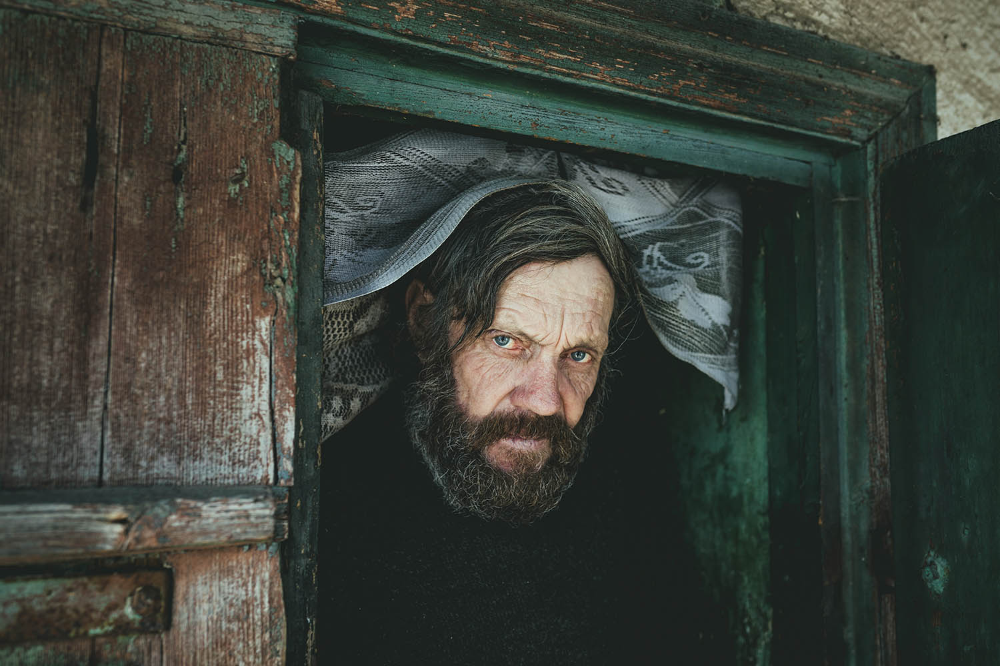
25: Priester Ion, Chilia Veche, Rumänien, 2017
Im Donau-Delta, treffen orthodoxe Christen, Katholiken, Protestanten, Altgläubige russischer Herkunft, wie der Priester Ion, und andere Glaubensrichtungen aufeinander. Die Geistlichen leben von den Zuwendungen der Gläubigen.
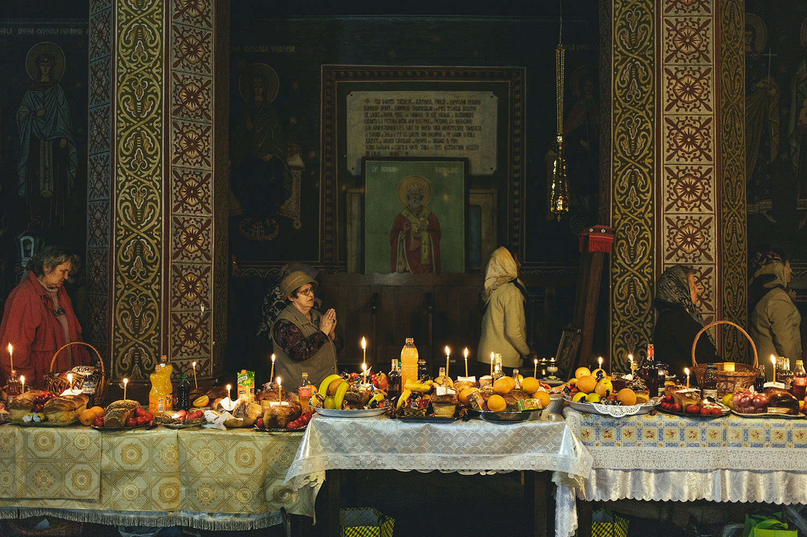
26: Kirchweih, Sulina, Rumänien, 2014
Alle sind aufeinander angewiesen. Die Bevölkerungsdichte ist hier am Rande der Europäischen Union so niedrig wie sonst nirgends. Man unterstützt sich gegenseitig mit Lebensmitteln, bei der Kinderbetreuung, bei Krankheit. Die Traditionen und Rituale stiften Gemeinschaft. Zur Kirchweih gestalten die Menschen gemeinsam ein Buffet.
Bangladesch 2018
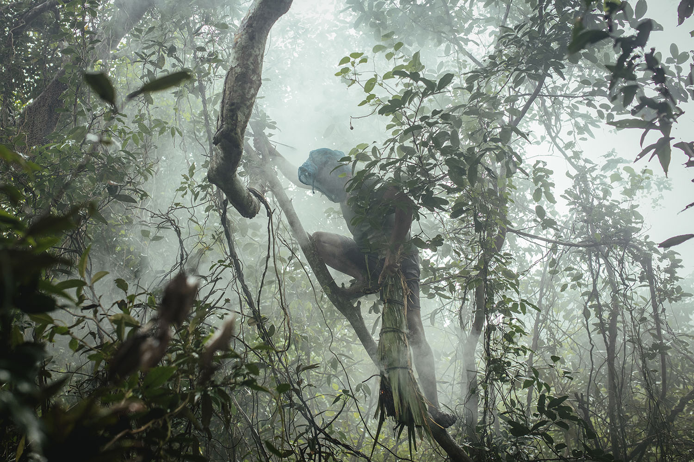
27: Wildbienen, Banishanta, Bangladesch, 2018
In Banishanta, im Südwesten von Bangladesch befindet sich der größte Mangrovenwald der Welt. Ein Mann sammelt dort den Honig von Wildbienen. Nur ein einfaches Netz über dem Kopf schützt ihn. Der übrige Körper des Honigsammlers ist den Wildbienen ungeschützt ausgesetzt. Im Rauch verschmilzt der Körper des Honigsammlers geradezu mit den Wildbienen. Die Wildbienen befördern durch Bestäubung das Wachstum der Mangroven. Der dort gewonnene Honig hat eine dunkle Farbe und bei aller Süße auch eine salzige Note. Er ist reich an Antioxidantien, wirkt antibakteriell und antiviral. Der Honig ist ein entscheidender Teil des Einkommens der Menschen hier. Deshalb trotzen sie auch der Gefahr durch den bengalischen Tiger.
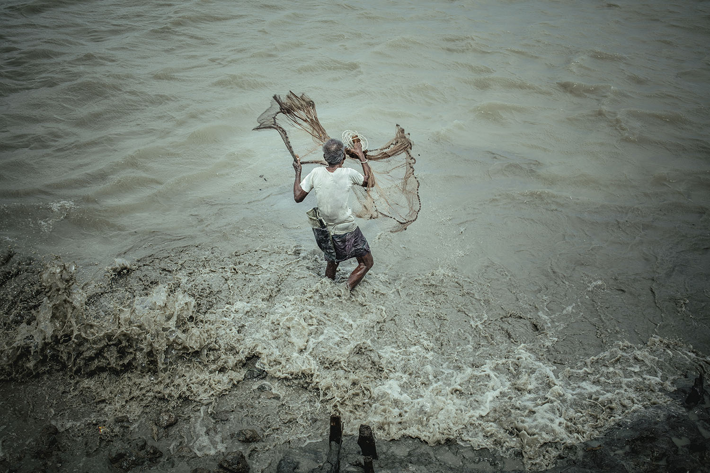
28: Ohne Titel, Banishanta, Bangladesch, 2018
Im Ganges-Brahmaputra-Meghna-Delta von Bangladesch, wo wegen des Klimawandels das Wasser immer stärker das Land erobert, sehen wir einen Fischer in Banishanta. Es gibt kein Boot. Der Fischer watet ins trübe Wasser und wirft sein Netz aus. Das Krabbenfischen ist ein zentraler Wirtschaftszweig für die einheimische Bevölkerung.

29: Ohne Titel, Mongla, Bangladesch, 2018
Noch reicht das, was die Natur den Fischern gewährt, fürs Überleben. Fisch ist die wichtigste Proteinquelle für die Menschen, doch Überfischung, Versalzung und Zyklone reduzieren die Erträge immer mehr.
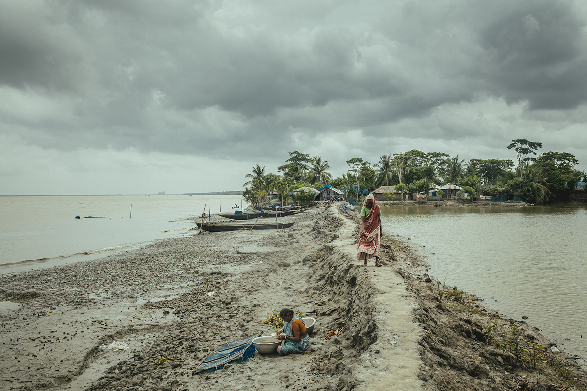
30: Damm, Mongla, Bangladesch, 2018
Der Damm schützt die Menschen und ihre Siedlungen vor dem steigenden Meeresspiegel.
In Bangladesch ergießen sich die großen Ströme Ganges, Brahmaputra und Meghna in den Golf von Bengalen. Auf ihrem Weg verzweigen sie sich und bilden ein Delta mit großen Lagunen und Inseln. An deren Ufern erstrecken sich die größten Mangrovenwälder der Welt. Die Menschen in Bangladesch nennen sie Sundarbans, die „schönen Wälder“. Die Sundarbans bilden eine entrückte und unzugängliche Welt. Die UNESCO hat dieses einzigartige und artenreiche Gebiet 1987 zum Weltnaturerbe und 2001 zum Biosphärenreservat erklärt. Die illegale Rodung weiter Waldflächen, die Versalzung der Böden durch die Aquakulturen der Garnelenfarmer, Umweltverschmutzung, Tropenstürme und der ständig steigende Meeresspiegel gestalten das Überleben der Menschen immer schwieriger.
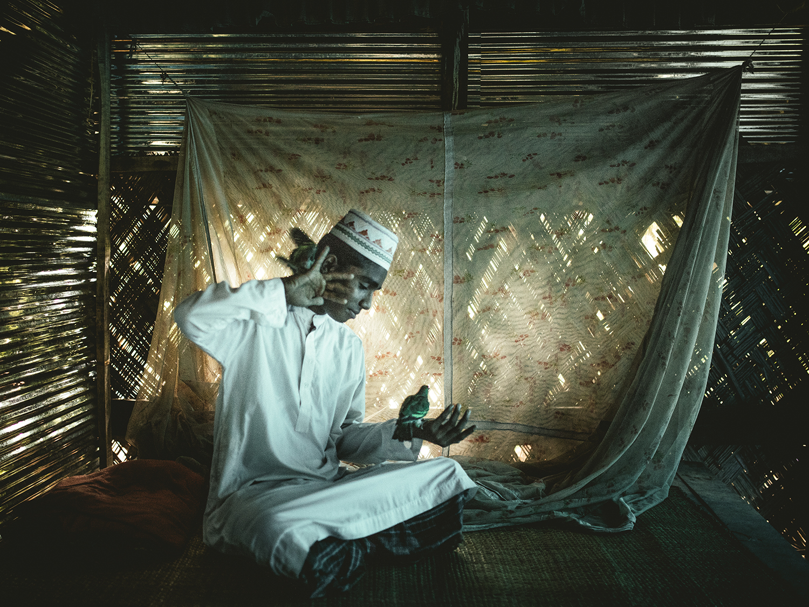
31: Ahmed, Mongla, Bangladesch, 2018
Durch das Flechtwerk der Hütte und einen dünnen Stoffvorhang mit Blumen fällt das Sonnenlicht auf einen jungen Mann in weißem Gewand, mit heller Gebetskappe und niedergeschlagenen Augen. Ahmed, ein angehender Imam, nimmt aber keine Gebetshaltung ein, sondern sitzt auf dem Boden der Fischerhütte. Auf dem ausgestreckten linken Handgelenk sitzt eine Taube und in seinem Nacken flattert eine zweite, geschützt von der erhobenen gespreizten rechten Hand Ein heutiger muslimischer Franziskus, den die krank machende Verschmutzung des Brunnenwassers beunruhigt.
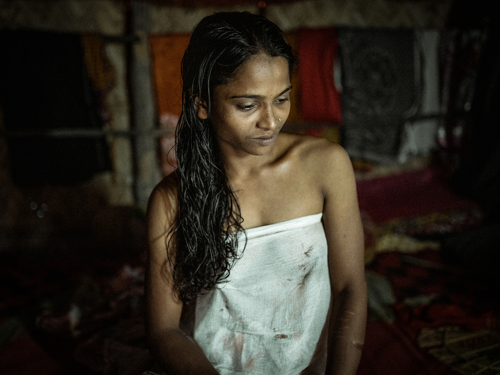
32: Poppy, Banishanta, Bangladesch, 2018
Im Nachbardorf lebt die Prostituierte Poppy. Mit Booten kommen die Freier vom Festland. Prostituierte wie Poppy leben hier in einer Gemeinschaft zusammen mit ihren Kindern, denen sie Bildung und einen Beruf ermöglichen wollen.
Venezuela 2019
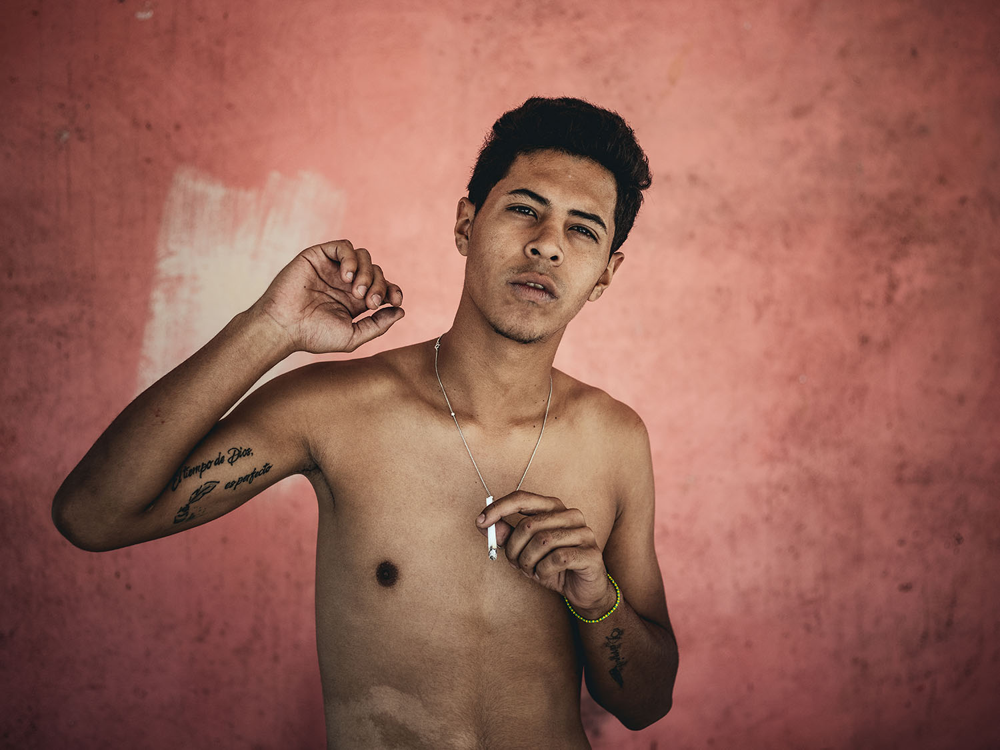
33: Am Mausoleum von Ismael Sanchez, Caracas, Venezuela, 2019
Durch die Entführung von Präsident Maduro und zahlreiche Angriffe auf Schiffe durch die Vereinigten Staaten von Amerika ist Venezuela momentan stärker im Fokus als in den letzten Jahren. In der Krise steckt das Land aber schon seit Längerem. Florian Bachmeier reiste 2019 in das karibische Land, um das Leben der Menschen dort zu dokumentieren. Nach seiner Rückkehr druckte die österreichische Zeitschrift Profil einige dieser Bilder ab.
Stolz präsentiert sich dieser junge Mann mit Tätowierungen auf dem Oberarm vor dem Mausoleum von Ismael Sanchez auf dem Südfriedhof von Caracas. Ismael Sanchez war eine Art Robin Hood, der die Reichen bestahl und die Armen beschenkte. Er wird als einer der Heiligen Ganoven (Santos Malandros) des María Lionza Kultes verehrt. Diese Heiligen schützen vor Kriminalität, aber sie helfen auch bei kriminellen Aktionen. In einem Land mit jährlich durchschnittlich 14.000 Morden reflektiert die Verehrung dieser Heiligen sowohl die Hoffnungen als auch die Ängste der Venezolaner.
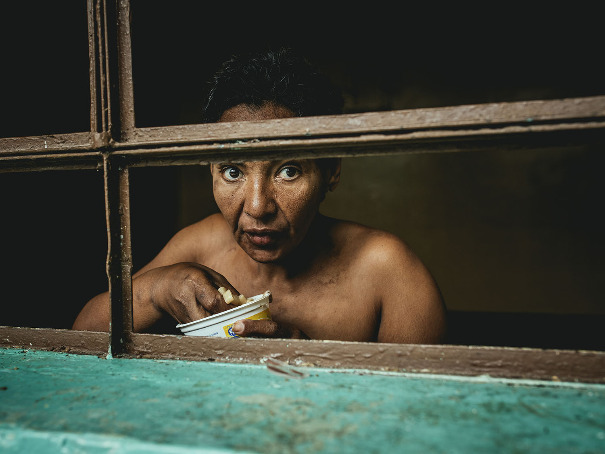
34: Psychiatrische Klinik Lidice, Caracas, Venezuela, 2019
Das Versprechen vom „Sozialismus des 21. Jahrhunderts“ und Hoffnung für viele Menschen in Venezuela ist am Ende. Am stärksten leiden jene Menschen am Rand der Gesellschaft, denen es an Nahrung und an Medikamenten mangelt. Dieser Patientin einer psychiatrischen Klinik wird kaum Pflege zuteil.
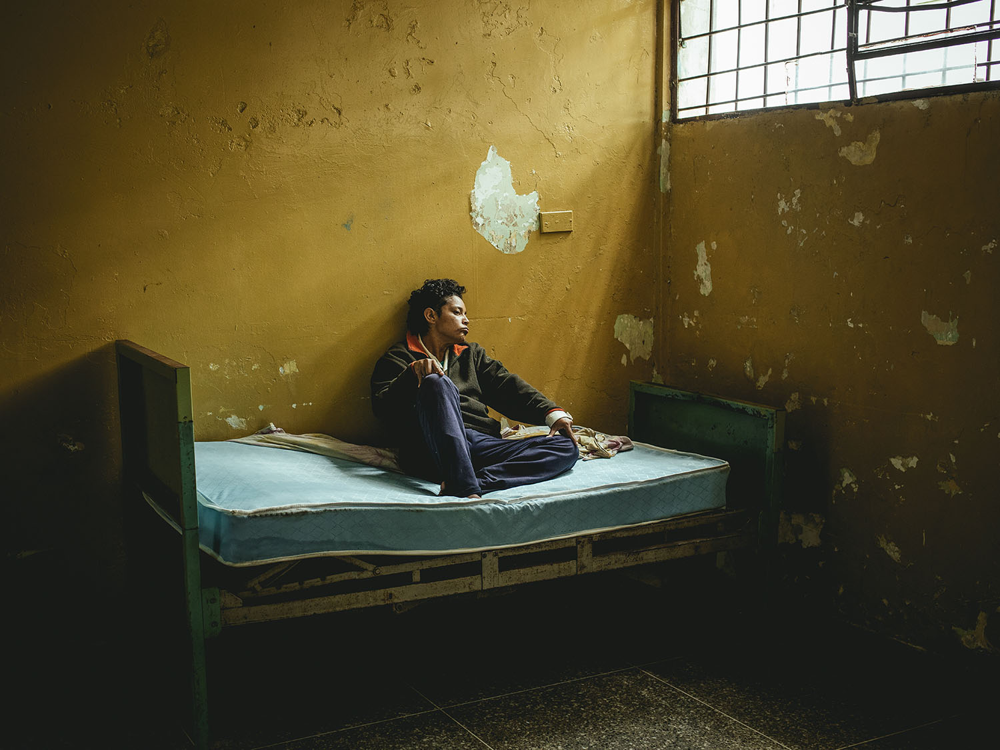
35: Psychiatrische Klinik Lidice, Caracas, Venezuela, 2019
Abgeblätterter Putz, die Fenster zu hoch zum Rausschauen, eine nackte Matratze: in einer Zelle, die eher an ein Gefängnis als an eine Klinik erinnert, muss diese psychisch kranke Frau auf unbestimmte Zeit leben: ein vergessener Körper in einem zusammenbrechenden System.
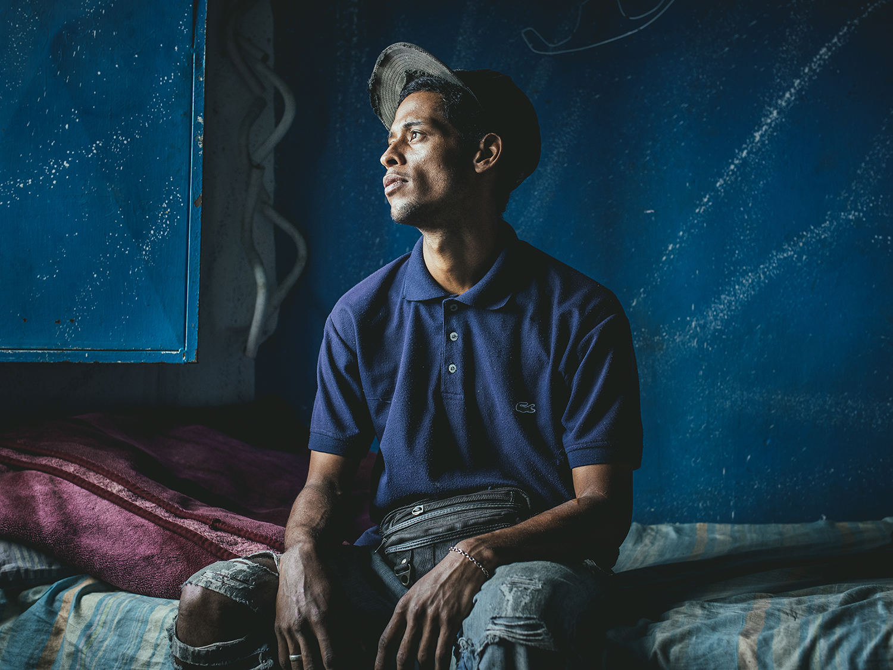
36: Javier Malave, Dulce Nombre de Jesùs de Petare, Miranda, Venezuela, 2019
Das Licht fällt nur auf das Gesicht dieses jungen Mannes. Sein Blick geht ins Nirgendwo. Die fest umgebundene Bauchtasche enthält seinen wertvollsten Besitz. Kalte Farben, blau und grün, beherrschen das Bild. Sie erzählen von der Hoffnungslosigkeit und Verzweiflung des jungen Mannes.
Mauretanien 2018
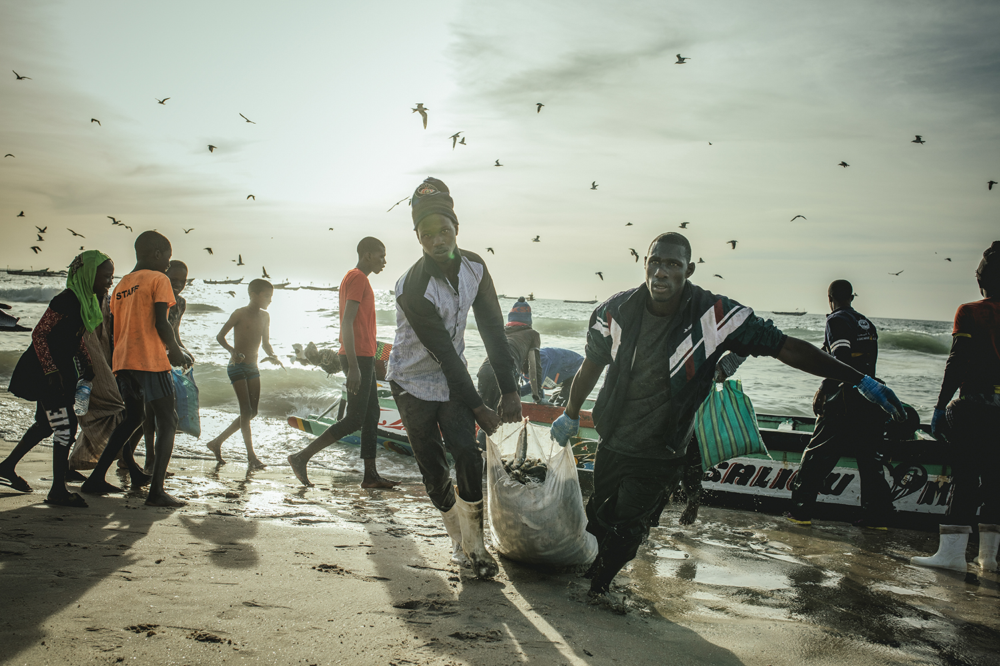
37: Fischfang, Nouadhibou, Mauretanien, 2018
Für das Magazin mare fotografierte Florian Bachmeier 2018 den neuen chinesischen Kolonialismus in Mauretanien. Zwischen 300 und 400 Schiffe unter chinesischer Flagge holen so viele Sardinen aus dem Atlantik, dass für die einheimischen Fischer nicht mehr viel bleibt. Am späten Nachmittag treffen sie mit ihrem Fang ein, bringen die Sardinen in Säcken an Land und laden sie auf die Karren der Händler.
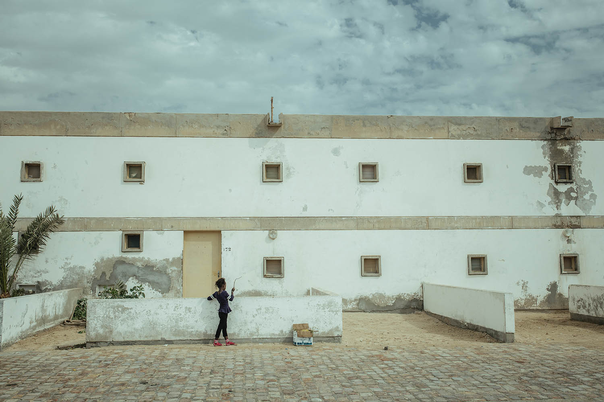
38: Ohne Titel, Nouadhibou, Mauretanien, 2018
In der Siedlung Cansadou leben vor allem Arbeiter des überwiegend staatlichen Eisenerzkonzerns SNIM. Viele Menschen in Cansadou leiden an chronischem Asthma wegen der ungesunden Arbeitsbedingungen und der Luftverschmutzung. Hinzu kommt der durchdringende Gestank von den nahen Fischmehlfabriken.
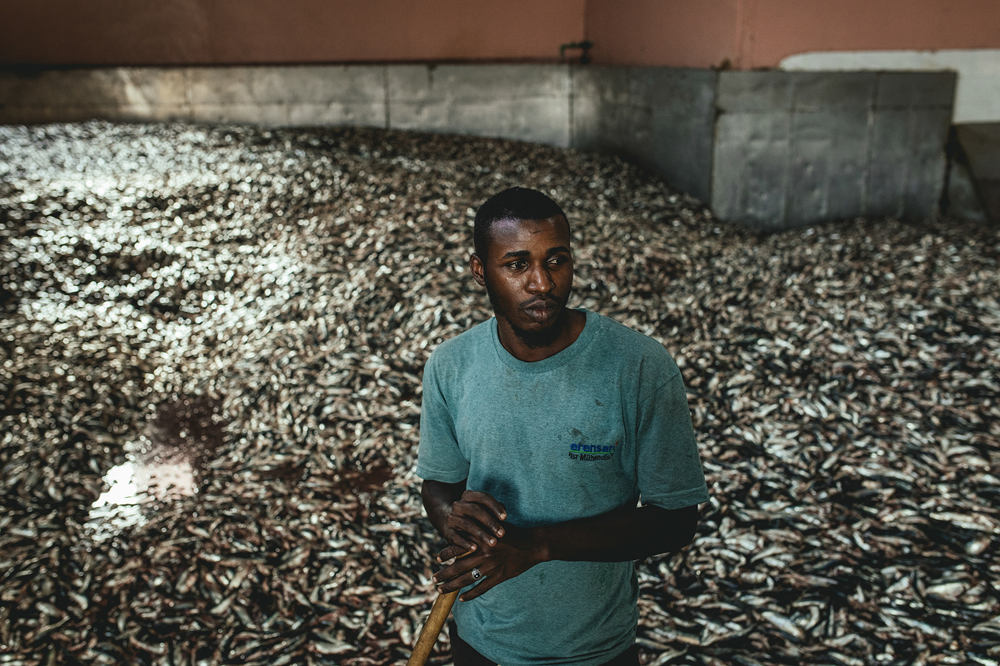
39: Fischmehlproduktion, Nouadhibou, Mauretanien, 2018
Im Jahr werden 550.000 Tonnen Fisch zu Fischmehl und Fischöl verarbeitet. Die gesamte Produktion von 130.000 Tonnen wird exportiert. Außer kargen Löhnen bleibt den Einheimischen kein Gewinn. Entlang der 600 Kilometer langen Atlantikküste befinden sich 30 Fabriken, neben den chinesischen auch türkische, wie hier im Bild.
In den Gewässern vor Westafrika sind auch Fangschiffe aus EU-Ländern tätig. Zusammen mit dem Kauf von chinesischem Fischmehl bekämpft die EU hier in Westafrika keine Fluchtursachen, sondern fördert sie.
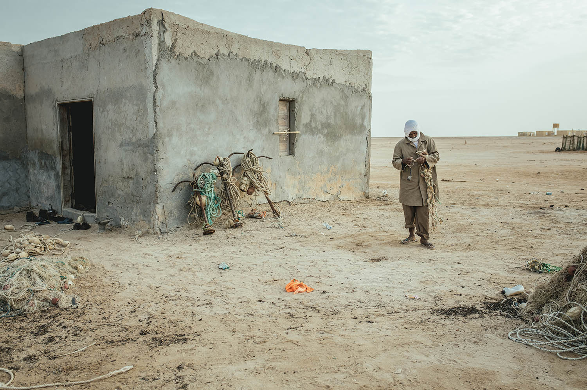
40: Ohne Titel, Nouadhibou, Mauretanien, 2018
Die große Zeit des Fischfangs ist vorbei. Scheich Muhammed Salim Biram verdient sich ab und zu etwas mit der Reparatur von Netzen.
Menschen auf der Flucht in Südasien und in Europa 2016-2021
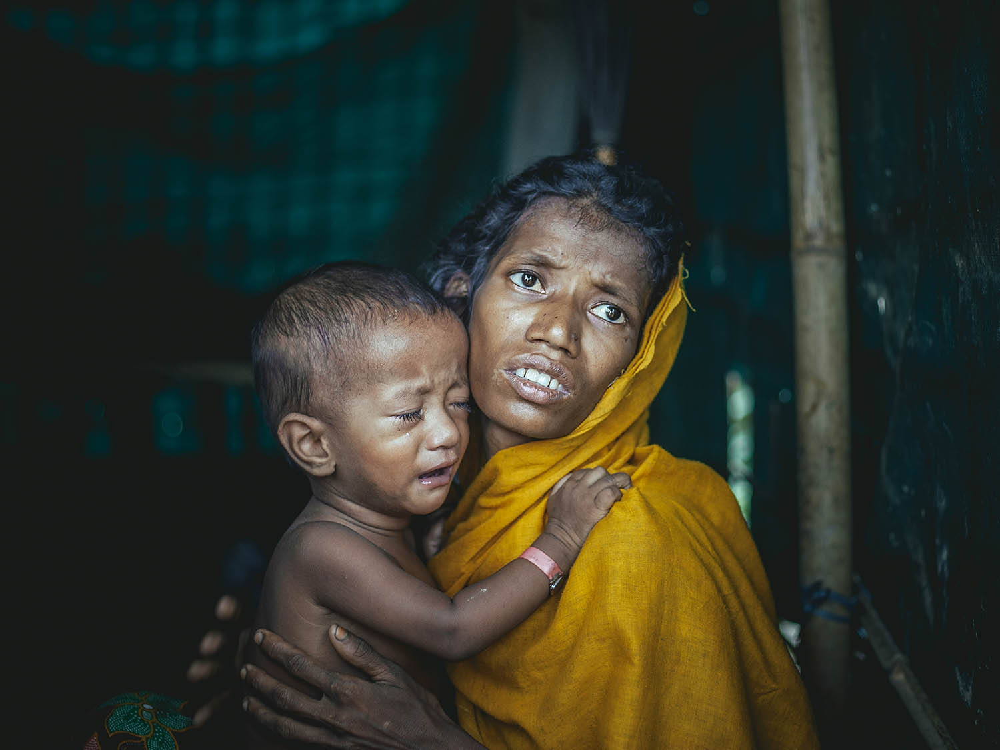
41: Samila mit Sohn, Kutupalong, Ukhia Upazila, Bangladesch, 2018
Die 25-jährige Samila ist abgemagert und kann ihren Sohn kaum stillen. Im August 2017 musste die Rohingya aus Myanmar flüchten. Auf der Flucht starb ihr zweijähriges Kind.
Die Armee des buddhistischen Landes Myanmar hatte an den überwiegend muslimischen Rohingya einen Völkermord verübt und ihre Dörfer zerstört. Fast eine Million Rohingya konnte ins Nachbarland Bangladesh flüchten. Im Flüchtlingslager Kutupalong wurden allein 2018 über 16.000 Kinder geboren.
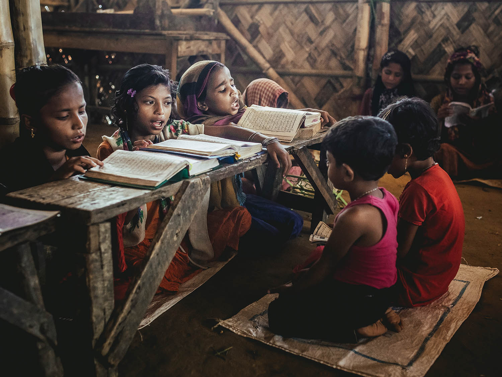
42: Medresa Camp 5 Kutupalong, Ukhia Upazila, Bangladesch, 2018
Diese Kinder werden von Imam Abdul Rashid unterrichtet, der wie alle anderen hier im August 2017 aus Myanmar geflüchtet ist. Die Medresa dient auch als Moschee.
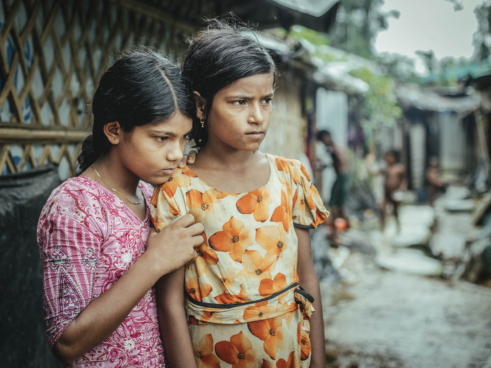
43: Jannat Ara und Anjuma Begun, Kutupalong, Ukhia Upazila, Bangladesch, 2018
Die beiden Waisenmädchen leiden unter Albträumen und Angstzuständen. Die Mutter war früh verstorben, ihr Vater von der myanmarischen Armee getötet worden. Die elfjährige Jannat Ara (rechts) wurde angeschossen. Erst im Flüchtlingslager konnte sie operiert werden. Auf der Flucht trug sie ihr Onkel drei Tage und Nächte lang, bis sie die Grenze zu Bangladesch überschritten hatten und in Sicherheit waren
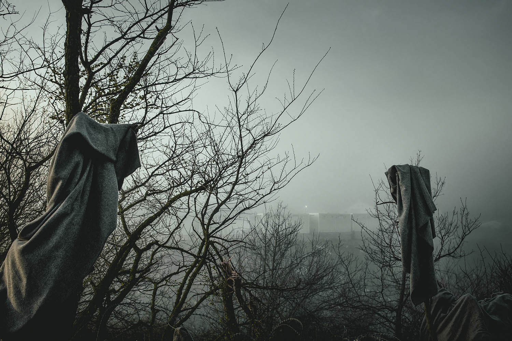
44: Ohne Titel, Idomeni, Griechenland, 2016
Nur langsam trocknen im Herbst die lebenswichtigen Decken im Flüchtlingslager. Seit Wochen warten über 10.000 Menschen darauf, dass die Grenze nach Mazedonien und damit die Balkan-Route wieder geöffnet wird. In einem Haupt- und verschiedenen kleinen Nebenlagern in Idomeni herrschen menschenunwürdige Zustände. Die Flüchtlinge leben in äußerst kleinen Zelten, die hygienischen Zustände sind katastrophal, Krankheiten grassieren, der wochenlange Dauerregen verschärft die Situation.
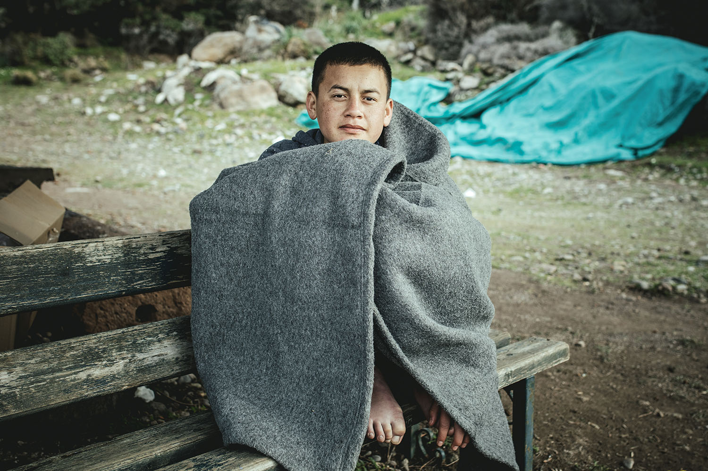
45: Sabsali, Lesbos, Griechenland, 2017
Der erst 14-jährige Sabsali kommt aus Baglan, im Norden von Afghanistan. Am 5. März 2020 ist er mit dem Boot auf der Insel Lesbos angekommen.
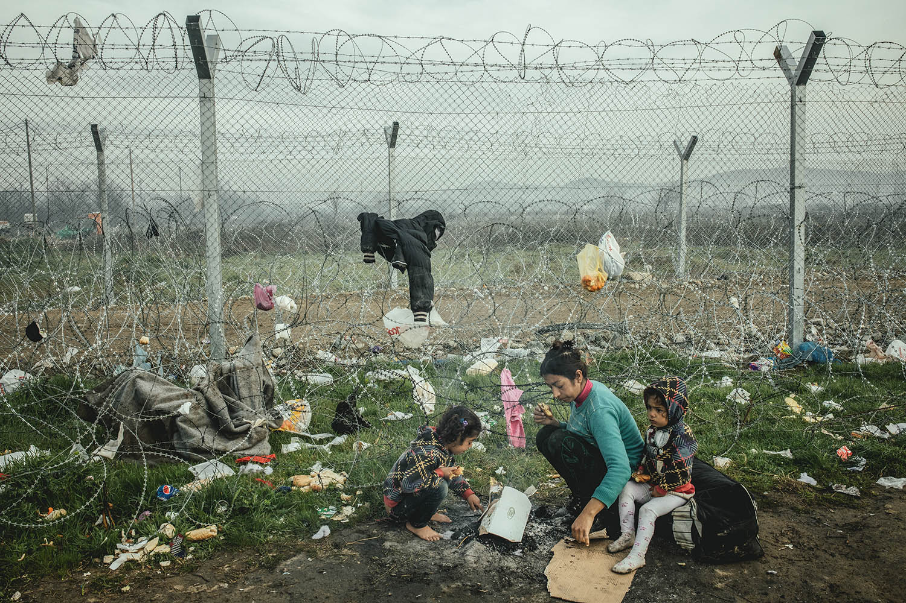
46: Ohne Titel, Idomeni, Griechenland, 2016
Eine syrische Mutter und ihre Kinder suchen nach Verwertbarem. Das Flüchtlingslager in Idomeni im Norden Griechenlands an der Grenze zu Mazedonien ist durch mehrere Zäune aus Stacheldraht gesichert.
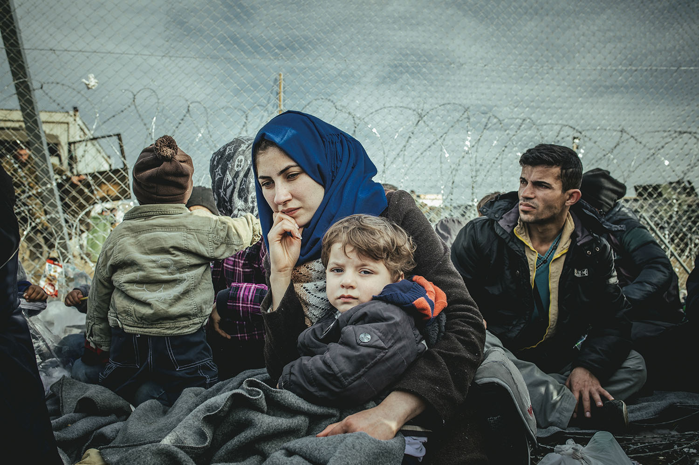
47: Gestrandet, Idomeni, Griechenland, 2016
Diese syrische Mutter ist mit ihrem Sohn im Flüchtlingslager von Idomeni gestrandet. Sie weiß nicht, wie lange sie dort bleiben muss und wie ihre Zukunft aussieht. Am 9. März 2016 schlossen Mazedonien (heute: Nordmazedonien) und weitere Staaten entlang der Balkan-Route ihre Grenzen komplett. Dadurch konnten die Flüchtlinge nicht weiterreisen nach West- und Nordeuropa.
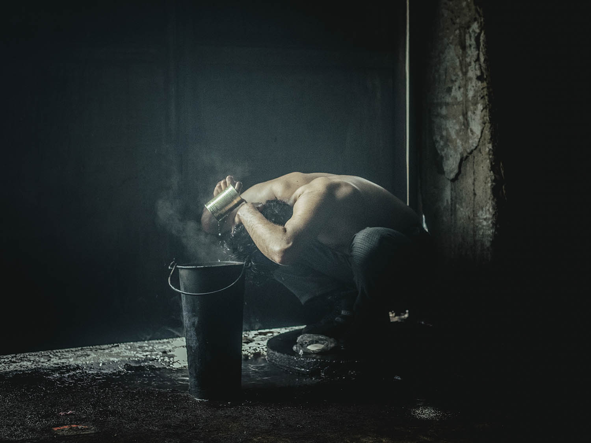
48: Ohne Titel, Belgrad, Serbien, 2017
Der junge Mann hat es bis Belgrad geschafft. Ob er weiterkommt in Richtung Westeuropa, ist ungewiss. Während der Wintermonate 2016 und 2017 suchen viele Flüchtlinge bei Außentemperaturen von bis zu minus 15 Grad Zuflucht in unbeheizten Lagerhäusern ohne Toiletten oder fließendes Wasser. Die unhygienischen Bedingungen führten zu Haut- und Virusinfektionen. Um sich zu wärmen, verbrennen die Geflüchteten alte Eisenbahnschwellen, Holz und Müll. Das führt zu dichtem Rauch und zu Atemproblemen.
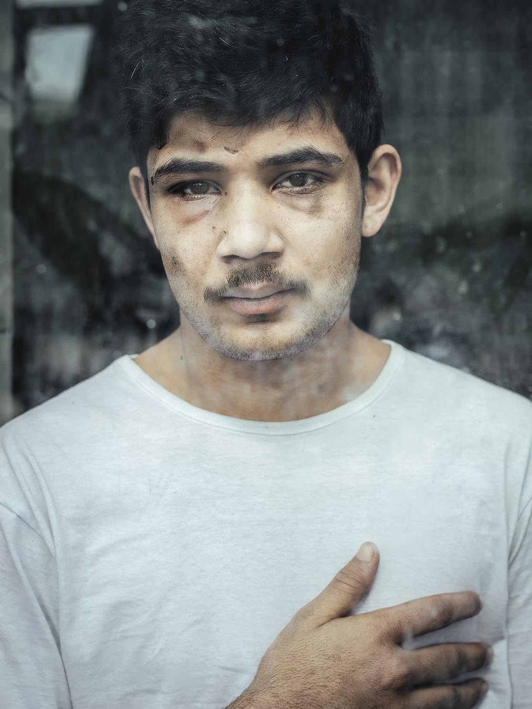
49: Mohammed Ashfaq, Šid, Serbien,2017
Mohammed Ashfaq ist 19 Jahre alt und kommt aus Pakistan. Schon 23mal hat er versucht, vom Flüchtlingslager Šid in Serbien nach Kroatien und damit in die Europäische Union zu gelangen. Die Grenzpolizisten haben ihn misshandelt und ihm alles abgenommen, sogar das überlebenswichtige Mobiltelefon.

50: Alae, Ceuta, Spanien, 2021
Der 16-jährige Alae bereitet sich in einer provisorischen Unterkunft in der Ruine eines Frauengefängnisses in Ceuta auf die Flucht vor. Kürzlich musste mit 18 Stichen eine Messerwunde genäht werden, die ihm ein Unbekannter zugefügt hatte. Alae kommt aus Tetouan unweit der marokkanischen Mittelmeerküste. Die historische Stadt ist UNESCO-Weltkulturerbe und dient dem marokkanischen König als Sommerresidenz. In Tetouan hat Alae für verschiedene Händler gearbeitet. Eine Perspektive für sein weiteres Leben sieht er nur auf dem europäischen Festland.
Frühe Arbeiten aus Spanien, Sambia und Rumänien 1996-1998
Während seines Studiums der Fotografie an der Escuela de Artes y Oficios in Pamplona, Spanien, entstanden diese Bilder in Schwarz-Weiß. Auf Reisen durch Mauretanien, Mali,
die Elfenbeinküste, Senegal, Burkina Faso und Rumänien gestaltete Florian Bachmeier erste Langzeitprojekte mit einem anthropologischen Fokus. In der Art einer teilnehmenden Beobachtung verbrachte er viel Zeit mit den Menschen, die er fotografierte und teilte ihr Leben. In Spanien interessierten ihn vor allem Volksfeste, religiöse Feste, Menschen am Rande der Gesellschaft und das Leben an der Meerenge von Gibraltar. Stark beeinflusst war er in diesen Jahren von seinem Mentor, dem spanischen Fotografen Koldo Chamorro (1949-2009). Von ihm lernte er, Geschichten zu erzählen, die Widersprüche zwischen Tradition und Moderne ins Bild zu setzen, die identitätsstiftende Qualität von Ritualen und Ereignissen zu erkennen und in einem Bild zu erfassen.
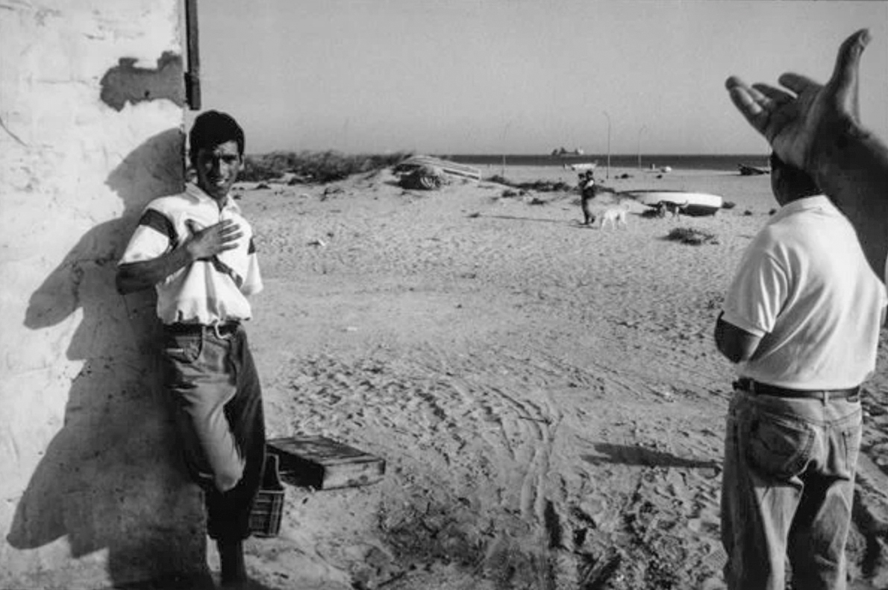
51: Ohne Titel, Zahara de los Atunes,Spanien, 1996
Männer am Strand: Irreguläre Migration, vermehrter Schmuggel und Streit um die Souveränität von Gibraltar prägen in den 1990er Jahren die Situation.
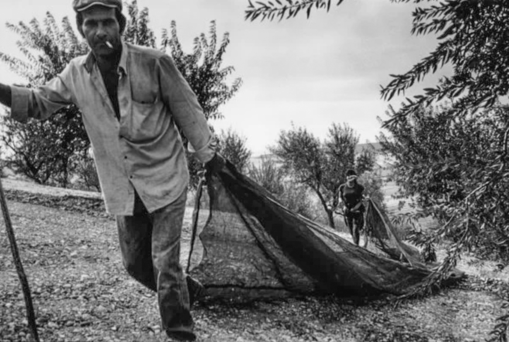
52: Ohne Titel, Andújar, Spanien, 1996
Trotz eines ersten Mechanisierungsschubs erfolgt die Olivenernte noch weitgehend manuell. In den Wintermonaten arbeiten viele Gitanos (Roma) in Andalusien als Tagelöhner oder mit kurzfristigen Arbeitsverträgen. Da die Arbeit nur für wenige Wochen im Jahr sicher ist, leben viele Familien in einer äußerst prekären wirtschaftlichen Situation.
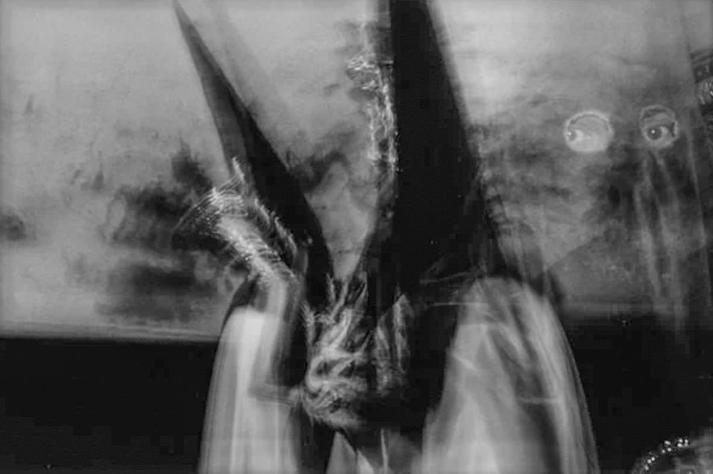
53: Ohne Titel, Arcos de la Frontera, Spanien, 1996
Die Karfreitagsprozession als Höhepunkt der Karwoche, der Semana Santa, hat auch heute noch für die Bevölkerung eine große Bedeutung.
54: Ohne Titel, Andújar, Spanien, 1996
Prozession der Virgen de la Cabeza bei der gleichnamigen Wallfahrtskirche in Andalusien. In den angespannten Gesichtern der Träger spiegelt sich das enorme Gewicht des Holzaufbaus. Neben der Marienstatue sitzt ein Priester, reibt zugeworfene Kleidungsstücke an der Figur und wirft sie sozusagen geheiligt zurück. Die Wallfahrtskirche hoch über Andújar war im Spanischen Bürgerkrieg umkämpft und wurde von den Republikanern verteidigt.
55: María, La Línea de la Concepción, Spanien, 1996
María empfängt einen Freier in La Línea de la Concepción. Der Ort ist aufgrund seiner Nähe zu Gibraltar schon immer ein Anziehungspunkt für Seeleute, Soldaten und Schmuggler. Viele Prostituierte arbeiten in der Nähe der Grenzübergänge.
56: Ohne Titel, Tarifa, Spanien, 1996
Massengrab für ertrunkene Flüchtlinge: In den 1990er Jahren entwickelt sich die Meerenge von Gibraltar zur Fluchtroute für Menschen aus Afrika, die nach Europa wollen. Besonders die Überfahrt in den „pateras“ genannten kleinen Booten, fordert zahlreiche Todesopfer.
57: Ohne Titel, Málaga, Spanien, 1996
Das Gefängnis Antigua Cárcel de Málaga wird in den 1990er Jahren auch zur Unterbringung von Flüchtlingen genutzt.
58: Marianne, Luampa, Sambia, 1998
In den 1970er Jahren wurde dieses Missionskrankenhaus in Luampa gegründet. Viele Menschen würden ohne Behandlung sterben. Deshalb sind die Menschen dankbar für diese Einrichtung und die Menschen, die das Krankenhaus betreiben. Die Bevormundung und den Fundamentalismus, der mit der religiösen Praxis oft einhergeht, nehmen sie in Kauf.
59: Ohne Titel, Luampa, Sambia, 1998
In der Kirche des Missionskrankenhauses.
60: Ohne Titel, Luampa, Sambia, 1998
Das Leichenhaus des Missionskrankenhauses.
61: Ohne Titel, Găvojdia, Rumänien, 1997
Die Situation in der Psychiatrischen Klinik in Găvojdia (Kreis Timiș) ist nach dem Sturz des Ceaușescu-Regimes geprägt von extremer Vernachlässigung, Nahrungsmangel und dem Fehlen therapeutischer Maßnahmen. Das führt zu unmenschlichen Lebensbedingungen für die Patienten.
62: Ohne Titel, Găvojdia, Rumänien, 1997
Die Patienten vieler psychiatrischen Kliniken wurden eingesperrt statt therapiert. Oft wurden die Kranken jahrelang isoliert.
63: Ohne Titel, Găvojdia, Rumänien, 1997
Erst durch internationale Berichte wurden die Zustände der psychiatrischen Kliniken in Rumänien öffentlich.